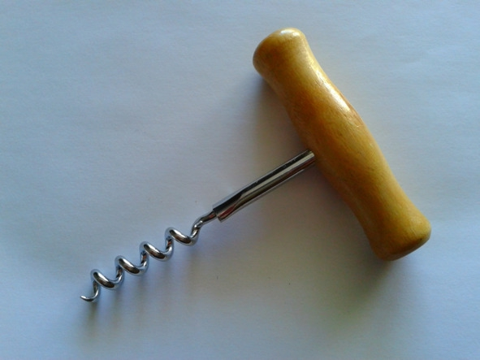
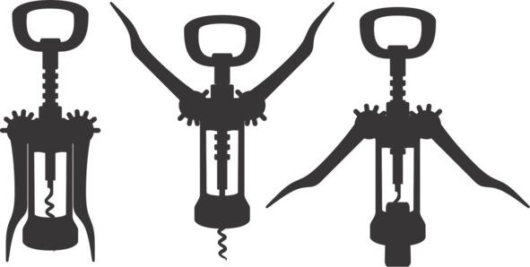
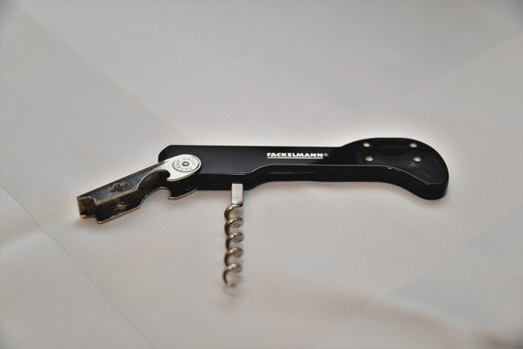
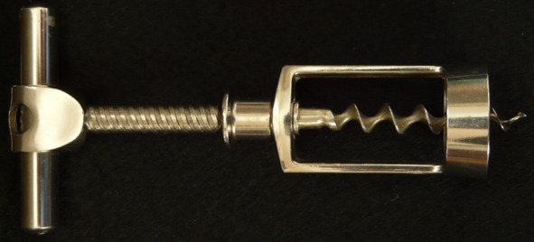
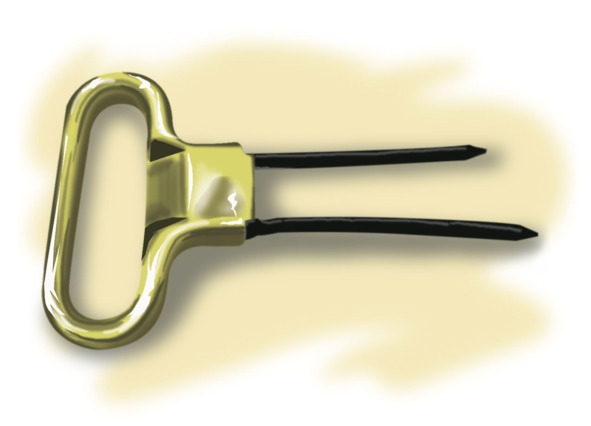

О культуре пития .. Как пользоваться разными видами штопоров.


Появление штопора напрямую связано с развитием традиции закупоривать бутылки пробковой затычкой. На протяжении многих веков вино хранили в бочках и подавали сразу в кувшинах. Горлышки сосудов затыкали тряпками или замазывали глиной и смолой. Обычай использовать кору пробкового дерева утвердился только в XVIII веке вместе с развитием виноторговли, когда пришлось транспортировать большие объемы вина так, чтобы напиток не испортился по дороге.
Первый штопор был запатентован в 1795 году английским священником Самуэлем Хэншаллом, но «стальной червяк» использовался еще в XVII веке. Эта элементарнейшая конструкция создана по образу пыжовника – инструмента для извлечения снаряда из дула несработавшего порохового оружия.
Общие советы
– Прежде чем извлекать пробку, срежьте фольгу с горлышка бутылки. В ножах сомелье для этого предусмотрено специальное лезвие, также подойдет обычный кухонный нож, ножницы или даже пилка для ногтей.
– Проверьте, насколько остро заточен винт. Штопор должен легко пронизывать пробку, а не крошить или разрывать материал. Лучше всего, если рабочая часть штопора изготовлена из нержавейки и хорошо отполирована – тогда потребуется меньше физических усилий, лезвие будет легко скользить в материале и пробка без труда выйдет из горлышка.
– Всегда устанавливайте острие перпендикулярно поверхности: если спираль войдет криво, то лишь испортит пробку, но не вытащит ее.
– Наконец, сильно не вдавливайте штопор, иначе бутылка лопнет.
Классический штопор («стальной червяк»)
Самая простая конструкция «винт с рукояткой». Недостатки – требует недюжинной ловкости, силы и сноровки. Преимущества – практически невозможно сломать, элементарно прост в эксплуатации, недорог.

Классический штопор
Инструкция: вкрутите штопор в центр пробки. Не переусердствуйте! Нельзя докручивать штопор «до упора», оставьте один виток, иначе пробка начнет крошиться, испортив вкус вина. Одной рукой крепко зафиксируйте бутылку, другой – аккуратно вытяните пробку, легонько расшатывая и подкручивая.
Штопор-рычаг («Шарль де Голль» или «Бабочка»)
Когда рычаги изделия подняты вертикально вверх, модель напоминает человечка с воздетыми руками – любимым жестом французского генерала. Отсюда и забавное прозвище «Шарль де Голль». Преимущества – очень легко использовать, для извлечения пробки не требуется прикладывать усилия. Недостаток – штопор-бабочка не всегда справляется с глубоко посаженными пробками.

Штопор-рычаг
Инструкция: установите острие лезвия по центру пробки. «Ручки» штопора должны быть опущены вдоль горлышка. Одной рукой придерживайте конструкцию, другой вкручивайте центральную ручку. Боковые рычаги штопора при этом начнут приподниматься. Когда рычаги достигнут положения «вертикально вверх», установите бутылку на ровную поверхность, затем медленно опустите рычаги двумя руками сразу. Пробка легко выйдет из горлышка.
Нож сомелье
Удобный складной штопор, придуманный французскими сомелье – сотрудниками ресторана, отвечающими за поставку и хранение вин в заведении, а также представление напитков клиентам. Кроме стального винта устройство снабжено лезвием для снятия фольги и двумя ступеньками, упрощающими открытие бутылки.

Нож сомелье
Инструкция: срежьте лезвием колпачок из фольги, обнажив пробку – резкими движениями обрежьте капсулу с двух сторон в самой верхней части горлышка, прямо под выступом. Ввинтите штопор в центр пробки, оставив на поверхности один «ярус». Упритесь в горлышко бутылки первой ступенькой и, пользуясь конструкцией как рычагом, немного вытащите пробку, которая выйдет не до конца. Поменяйте положение ручки на вторую ступеньку и снова потяните. Хорошим тоном считается в самом конце вынуть пробку руками, предварительно обвернув ее чистым полотенцем.
Винтовой штопор
Механическое приспособление, максимально упрощающее раскупоривание бутылки. Оптимальный вариант для открытия вина девушками, поскольку требует минимальных усилий.

Винтовой штопор
Инструкция: приставьте спираль к пробке и вкручивайте винт до тех пор, пока вся пробка не нанижется на штопор.
Цыганский штопор («Друг дворецкого»)
Изящные щипцы, позволяющие бережно извлечь даже старую и хрупкую пробку. Модель получила название «цыганской» потому, что не повреждает пробку, и нечестные дельцы (например, цыгане) могут заменить хорошее вино в дорогой бутылке на откровенное пойло, после чего закупорить оригинальной пробкой, и визуально никто не заметит подмены.
Отсюда же и прозвище «друг дворецкого». В Англии считалось, что представители этой профессии частенько отпивают хорошее вино из запасов своих хозяев, а такая конструкция штопора позволяет легко скрывать следы преступления.

Цыганский штопор
Инструкция: вонзите щипцы по краям пробки и плавно опустите в бутылку на всю длину, затем выньте пробку, прокручивая ручку штопора.